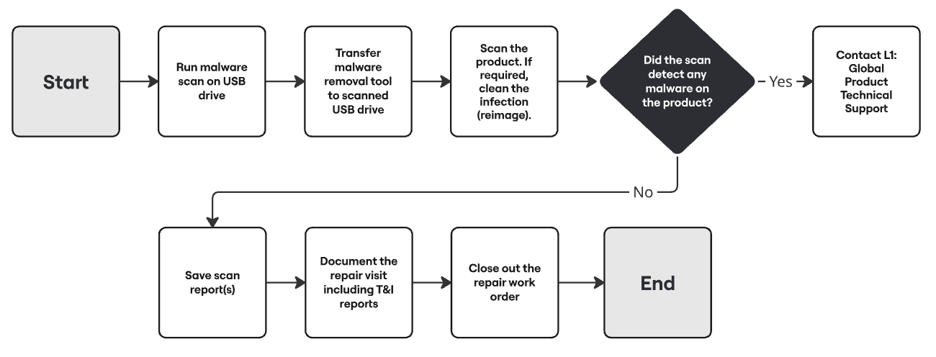

Detecting and Removing Malware
This topic includes information about how to handle suspected malware on a BEC product, including documentation following a service visit.
Important: If malware is suspected on an instrument, it should be re-imaged, because this is the only way to be certain any malware present has been removed. If there is data on the instrument that should be preserved, save this data before re-imaging, and restore the data when complete.
Note: If a customer would like information about whether there was any malware on the device, use the following procedures to detect and remove it for them, but inform them we can only guarantee malware removal if we go through the re-imaging procedure.
Important: After you perform this procedure, delete any malware detection and removal tools that you copied to the instrument’s hard drive.

- Use the malware detection and removal tool to prepare a USB drive for transferring the tool to the BEC product. See Detecting and Removing Malware from USB Drives for more information.
- Use the malware detection and removal tool on the BEC product. See
Detecting and Removing Malware from the Instrument for more information.
- If malware was detected, file a Safety - Level 1 complaint to document the presence of malware on the product. Attach reports as evidence that it was removed. Document the following details when closing the Task/WO for the repair visit. If the information is not known or not available, enter “Unknown."
- How was the malware discovered (e.g. customer complaint, USB drive scan, during preventive maintenance, etc.)?
- Is there an Ethernet connection to the customer network? If yes, have you escalated to customer IT?
- Is there an Ethernet connection to other BEC devices? If yes, have you scanned the other devices?
- Is the product enrolled with PROService or IntelliServe and is it functioning?
- Attach a screenshot of the OS version. (This would have been collected when removing the malware.)
- What is the software version of the application product?
- Is Trellix Solidifier enabled, per configuration?
- If malware was not detected
- Attach the scan the report to the Task/WO as objective evidence that malware was not found.
- Select an appropriate ARV keyword. Do not set ARV or AR to “Data Security."
- If malware was detected, file a Safety - Level 1 complaint to document the presence of malware on the product. Attach reports as evidence that it was removed. Document the following details when closing the Task/WO for the repair visit. If the information is not known or not available, enter “Unknown."
- Email the MSERT log file, along with any screenshots, to ProductSecurity@beckman.com.
- If requested, provide copies of all malware detection and removal reports to the customer, including reports that indicate malware was detected, that malware was not detected, and that malware has been removed.